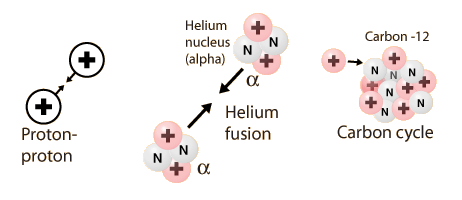

Nuclear Fusion in Stars
The enormous luminous energy of the stars comes from nuclear fusion processes in their centers. Depending upon the age and mass of a star, the energy may come from proton-proton fusion, helium fusion, or the carbon cycle. For brief periods near the end of the luminous lifetime of stars, heavier elements up to iron may fuse, but since the iron group is at the peak of the binding energy curve, the fusion of elements more massive than iron would soak up energy rather than deliver it. While the iron group is the upper limit in terms of energy yield by fusion, heavier elements are created in the stars by another class of nuclear reactions. This nuclear synthesis of elements heavier than iron uses energy rather than supplies it.

|
Index
Nuclear fusion concepts |